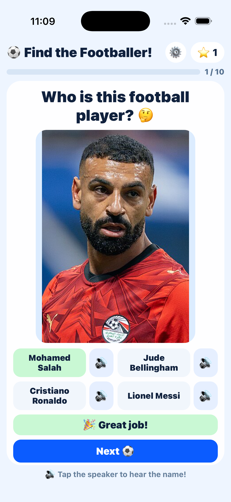

Çocuklar Neden Seviyor?
- Basit, renkli ve çocuk dostu tasarım
- Büyük butonlar ve kolay kullanım
- Olumlu geri bildirim ve skor sevinci
- Hızlı eğlence için 10 soruluk kısa turlar
Çocuklar ve aileler için eğlenceli bir futbol tahmin oyunu. Gerçek fotoğraflardan ünlü futbolcuları tahmin et, Türkçe ve İngilizce arasında geçiş yap, internetsiz her yerde oyna.
App Store'dan İndirOyun, sonuç ve dil ayarları ekranları.



Gizlilik Politikası: Gizlilik Politikası
Destek: Destek
Gorsel Kaynaklari ve Lisanslar: Player Image Sources